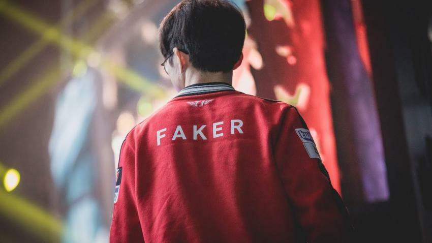

<
The SKT
SKT-T1
- Skt t1 history
- who were the key?
- current skt
SKT T1 history
Skt t1 is one of the most fundamental e-sports teams in League of Legends history.
Both Lim Yo-hwan and Faker, who are Pele/Maradona of e-sports in Korea and are called the best legends of all time, are from T1. In particular, Lim Yo-hwan was considered the greatest professional gamer regardless of sports thanks to his unrivaled performance in the League of Legends in the early days of StarCraft,which laid the foundation for e-sports development. In addition, even if you are not interested in e-sports, you can know T1, so the expression of the e-sports world's New York Yankees, Yomiuri Giants, Real Madrid, or FC Barcelona is not awkward.
Faker and Lee Sang-hyuk, called the League of Legends' Goat, and He is still a professional gamer of SKT 1 and runs personal broadcasting.
